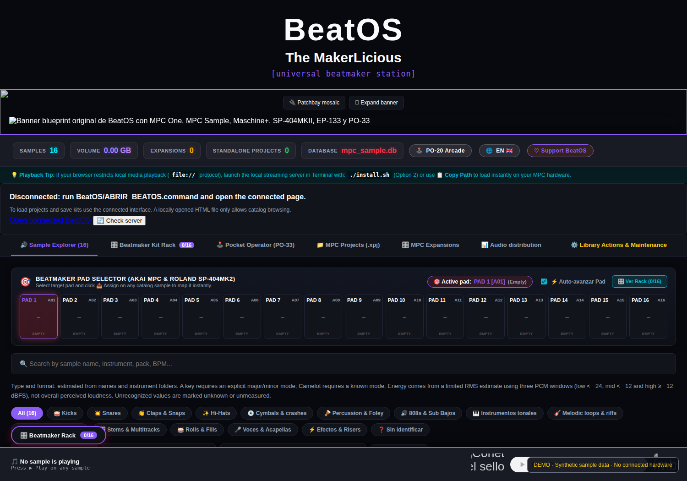

Make your samples
work for your hardware.
BeatOS — The MakerLicious is an open-source Python sample-library browser and 16-pad drum kit workspace for beatmakers. Search and preview sounds, inspect supported Akai MPC projects, then prepare sample kits for hardware samplers.
Actual BeatOS interface



What BeatOS actually does
Sample explorer and preview
Browse local WAV and compatible audio libraries. Filename-based BPM/key hints and RMS-window energy estimates are clearly distinguished from full audio analysis.
Akai MPC XPM / XPJ inspection
Inspect supported projects and Drum programs, identify missing sample references, and load a working 16-pad copy. XPJ compatibility differs by MPC model.
16-pad beatmaker rack
Build and audition kits, change individual pad controls, export a kit and transfer files to the device using its documented import method.
Sampler export workflows
Akai MPC, Maschine WAV/JSON, Roland SP-404MKII and SP-404A/SX WAV, Pocket Operator PO-33/PO-133 audio reels, and EP-133 WAV/ZIP interchange.
Spanish and English
Language selection in the local web UI and bilingual manuals. Complete device-level and rare backend-error localization remains under verification.
Local and inspectable
Python, SQLite and a local HTTP player. No cloud upload is required for the basic sample browsing and kit-building workflows.
Getting started
- Download the release ZIP (not GitHub's automatic source ZIP) and verify its published SHA-256.
- Install Python 3.11+ and, if needed for conversion, FFmpeg.
- Follow the English installation guide or guía en español in the GitHub repository.
- Start BeatOS, index your own library, select EN or ES and build a 16-pad kit.
Detailed hardware compatibility and technical limitations are available before downloading.